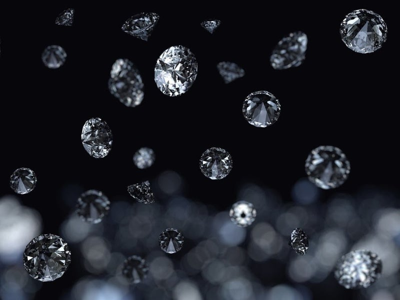
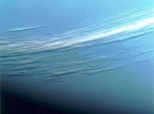
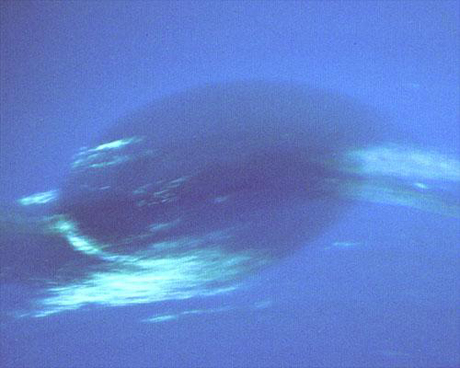
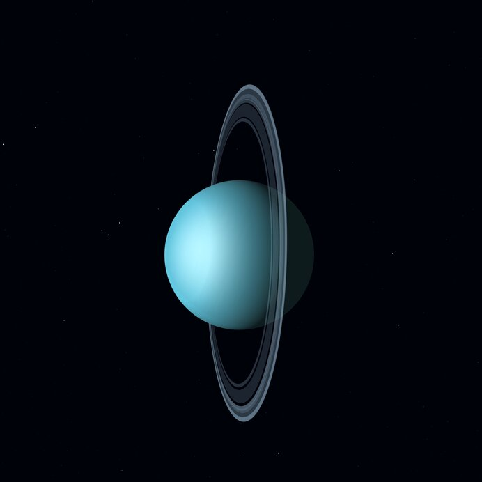
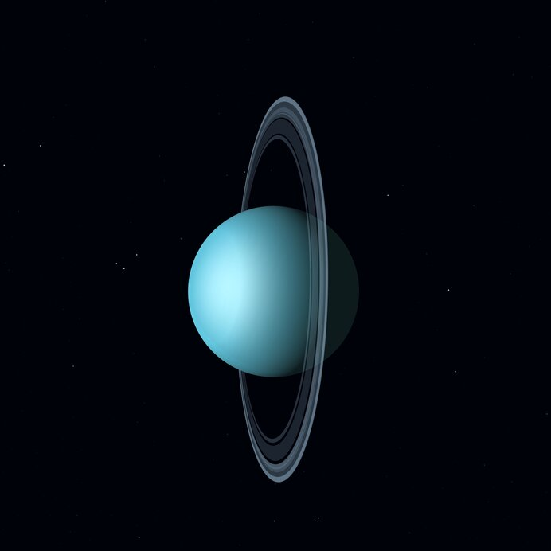
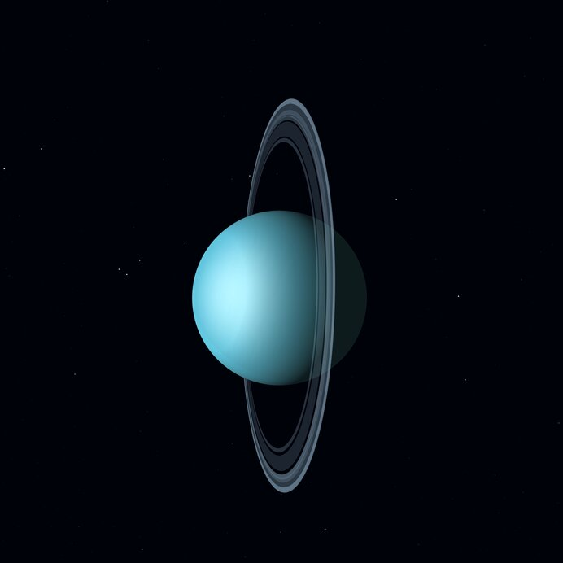
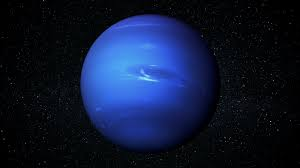
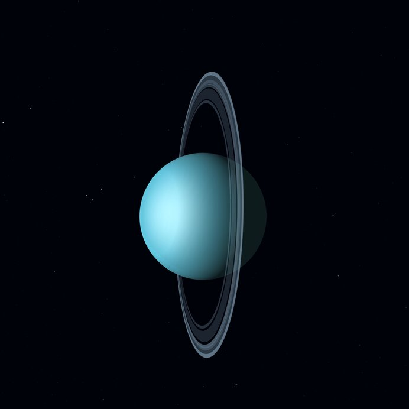

海王星に関わること



 


日々、海王星の観察をしています。
 海王星は約45億年前に誕生したと考えられています。 天王星とよく似た構造で岩石や氷からなる核のまわりを、水やアンモニアとメタンがまじった氷のマントル、外側はヘリウムとメタンを含む水素ガスが覆っています。 海王星はガリレオ・ガリレイによっても観測されていたが、当時は恒星と思われていました。天王星の発見後、軌道のふらつきから未知の惑星が存在すると考えられました。 ユバン・ルヴェリエの数学的計算によってその位置が予測されました。その予測に基づき1846年にベルリン天文台で観測が行われヨハン・ゴットフリート・ガレが存在を確認しました。

日々、海王星の観察をしています。
住めません。中心部分に氷の塊があり極寒の地面がありますがそこに行き着くまでには天王星の周りにメタンなどが爆発を繰り返しているため高温のガス空間を抜かなければいけません。また海王星に行き着いたとしても1秒も経たないうちに死にます。
海王星です。まず見た目がきれいなのが一つと純粋に水色が好きだからです。
海王星のメタンの大気は、太陽からの赤い光を吸収し、青い光を宇宙に反射します。その結果、惑星はその鮮やかな青い色を持っています。